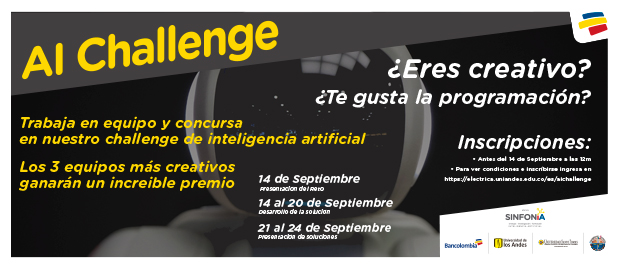
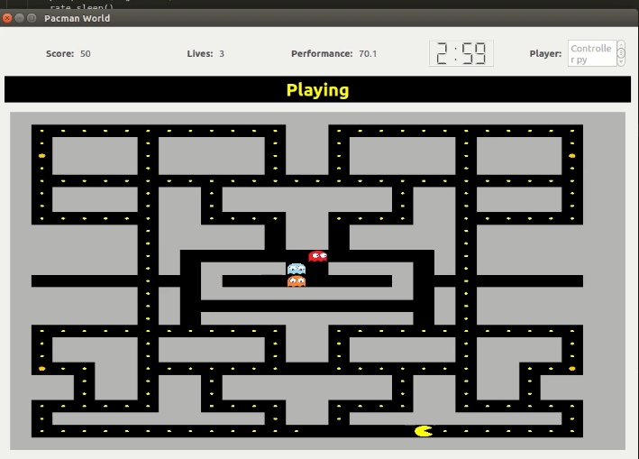

AI For Future equipo Ganador del AI Challenge
Septiembre 24 2018
El pasado 24 de septiembre de septiembre se celebraba en uno de los laboratorios de la Universidad del Magdalena la premiación del concurso patrocinado por Bancolombia, el AI Challenge.
“El AI Challenge hace parte de la propuesta liderada por la Alianza SINFONIA conformada por Bancolombia, la Universidad del Magdalena, la Universidad Santo Tomás y la Universidad de los Andes, cuyo fin principal consiste en potencializar el ecosistema de inteligencia artificial en Colombia a través de innovaciones que generen impactos positivos en la sociedad.
AI Challenge pretende proponer un reto interesante y desafiante que motive a estudiantes en niveles de pregrado y posgrado a demostrar habilidades de creatividad, recursividad y resolución de problemas usando inteligencia artificial.”
El equipo conformado por Fabián Beltrán, Sergio Robles y Ricardo Romo se hizo con el primer puesto del concurso al presentar una solucion que cumplia con todos los retos del concurso.
La solución a este reto se divide en dos partes, una es el dispositivo físico externo al computador y otra es el nodo implementado en el paquete de pacman_controller.
Paquete del juego: https://github.com/carlosquinterop/ros-pacman.git
1. Sistema controlador de interacción externo al computador.
Para la primera parte se decidió fabricar un guante con contactos metálicos en la yema de los dedos como dispositivo controlador. Este guante se conecta a través del computador con un arduino que se comunica por puerto serial. El dedo pulgar está conectado a tierra (GND) y los otros 4 dedos a un pin digital del arduino. La lógica implementada en la programación del microcontrolador, detecta los cambios de estado de los pines digitales, estos se mantendrán en HIGH (ALTO) siempre que no hagan contacto con el dedo pulgar. Este cambio genera una respuesta del arduino, mandado un caracter numerico al puerto serial (0,1,2,3,4).
La segunda parte se lleva a cabo dentro del paquete de pacman_controller, este estará leyendo constantemente el puerto serial en busca de nuevos cambios del dispositivo externo. Una vez detectado el carácter numérico adecuado, se procede a publicarlo al topic de /pacman_Actions0 para ser interpretado por /pacman_world (en caso de jugar con un pacman, /pacman_Actions1 en caso de jugar con los dos). La manera en que están distribuidos los controles en el guante se realiza de la siguiente manera:
Dedo índice = arriba.
Dedo medio = derecha.
Dedo anular = izquierda.
Dedo meñique = abajo.
2. Agente controlador autónomo:
Para la implementación del agente controlador se intenta separar los estados del juego en campos generales: adversarial (enemigos encerrados, enemigos libres), muchas galletas o pocas galletas, cantidad de enemigos, etc. En cada campo o estado de juego se realiza un comportamiento determinado.
Cuando el mapa es un laberinto con una sola galleta y sin enemigos o con enemigos encerrados, se ejecuta un algoritmo de búsqueda por profundidad para cada combinación de los movimientos disponibles (arriba, abajo, izquierda, derecha). Cuando el mapa es un laberinto y tiene más de una galletas pero no demasiadas, se genera un grafo de todas las galletas y el pacman y se utiliza algoritmos genéticos para encontrar la ruta más óptima.
Cuando se tiene un estado de juego adversarial, el pacman se mueve dependiente de un agente automada. Este agente se basa en un algoritmo minmax. Este algoritmo supone que los enemigos se mueven de manera óptima, tratando de minimizar mi score (puntaje). El algoritmo lo que busca es obtener el mejor puntaje suponiendo que los fantasmas se moverán (luego del pacman moverse) buscando minimizar mi puntaje. Es decir, el pacman busca el mejor puntaje que puede obtener cuando los fantasmas se muevan de manera óptima.
Nota: el puntaje es dado por una función de evaluación creada por el grupo.
Debilidades:
Cuando el mapa tiene pocas galletas,y estado del juego es adversarial el pacman intenta huir de los fantasmas, y a veces no ve la galletas cercanas por darle mucho peso a la huida de los fantasmas.
Cuando se tiene un mapa de dimensiones grandes, se encuentran menos cantidades galletas y el estado del juego no es adversarial, el sistema autónomo es menos eficiente.
Algunos trabajos en los que se basaron las soluciones:
● ALGORITMO GENETICO
● AGENTE AUTOMATA
3. Solución de cooperación humano/máquina:
Para esta solucion se utilizaron los paquetes anteriores, con la diferencia de que el controlador manual se debía enviar al pacman_controller2.
Las instrucciones, links y requisitos para ejecutar el juego y los controladores estarán en la pestaña de recursos.